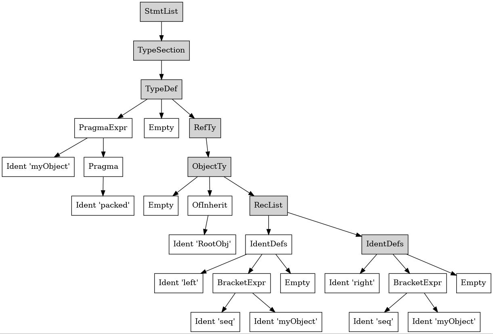

Les macros avec Nim - tutoriel de métaprogrammation
Ce tutoriel a pour objectif d'être une introduction aux capacités de métaprogrammation du langage de programmation Nim. Il vise à donner autant de détails que possible pour démarrer vos projets. Il existe de nombreuses ressources que ce soit à travers les livres ou sur Internet mais vous devriez trouvez ici (à terme) une description complète du processus de développement de macros.
Plan:
- Introduction
- Procédures Génériques
- Templates
- Macros
- Exemple d’utilisation
- Autre macro :
power2Enum - Références et bibliographie
Introduction
Qu'est-ce que la métaprogrammation ?
La métaprogrammation consiste à programmer du code informatique. Autrement dit, l'entrée et la sortie de programmes réalisant de la métaprogrammation seront eux-mêmes des bouts de code.
Mon language préféré ne me permet pas d'écrire des macros. Pourquoi écrire des macros (avec Nim)?
Le principal objectif est d'écrire facilement des longues portions de code qui sont répétitives ou pour s'adapter par exemple à de nombreuses architectures.
Il est également possible d'écrire de mini-langages de programmation nommés DSL ("domain-specific languages") pour une utilisation précise, comme la description de contenu d'une fenêtre graphique avec Owlkettle
ou pour spécifier les paramètres d'un réseau de neurones Arraymancer. Les macros sont écrites une fois par le développeur d'une bibliothèque, et les utilisateurs de cette bibliothèque vont voir leur code modifié
par les macros sans même utiliser de macros par eux-mêmes.
Quel rapport avec les macros ?
Les macros sont ces fonctions qui vont travailler sur des bouts de code et générer du code en sortie. Nous verrons par la suite que ce code est représenté sous la forme d'arbre syntaxique nommé AST.
Quatre niveaux d'abstraction
Il existe quatre niveaux d'abstraction en métaprogrammation qui sont chacun associés à un type de procédure ou itérateur:
- Procédures/fonctions/itérateurs ordinaires (Pas de métaprogrammation)
- Les procédures génériques et les classes de type (Métaprogrammation au niveau du type)
- Les « modèles »
templateen anglais (Un méchanisme de copier-coller avancé) - Les
Macros (Substitution d'arbre syntaxiqueAST)
Il faut garder en tête que la métaprogrammation est un méchanisme complexe, et il est fortement recommandé d'utiliser le niveau d'abstraction le plus faible possible, et pas de métaprogrammation du tout lorsque cela est possible. Il existe plusieurs raisons à cela. Premièrement, il est difficile de relire du code source utilisant de la métaprogrammation. Cela demande beaucoup de temps pour vérifier que le code source ne génère pas d'erreur et trouver l'origine d'une erreur s'il y en a une. Sans commentaire, une macro est presque illisible. Vous verrez par la suite qu'il est difficile de comprendre l'objectif et le fonctionnement d'une macro rien qu'en la lisant. Deuxièmement, il est difficile de faire de la gestion d'exception lorsqu'on manipule du code source. Il faut vérifier le code source qu'on reçoit en entrée d'une macro, et comme les possibilités sont très nombreuses, il est presque impossible de trier des codes sources valides en entrée d'une macro. Cela pose des problématiques de sécurité évidentes. C'est une des raisons pour laquelle la plupart des langages de programmation ont évité d'introduire des capacités de métaprogrammation. Enfin, les temps de compilation sont proportionnels au travail que doit réaliser le compilateur. Plus le niveau de métaprogrammation est avancé, plus le temps de compilation augmente, rendant le développement plus complexe et forçant ainsi la fragmentation du code en plusieurs modules.
Je vous propose dans ce tutoriel une présentation de ces quatre niveaux de métaprogrammation. Nous verrons au passage des notions nécessaires au développement de macros, comme les paramètres non typés, l'hygiénisation des variables, l'introspection de code, les arbres syntaxiques. En bonus, nous verrons des bouts de code (« snippets » en anglais) qui vous seront peut-être utiles en dehors de la métaprogrammation. Avant d'aborder les macros et les arbres syntaxiques, nous commençons donc avec les procédures génériques, puis les modèles avec les paramètres non typés.
import std/macrosProcédures Génériques
Un des objectifs de la programmation est l'automatisation de tâches répétitives. Certains programmes sont fastidieux à écrire et nous écrivons souvent des codes similaires.
Imaginez que vous voulez programmer une addition. Votre algorithme est probablement général et ne dépend peut-être pas du type de l'entrée. Votre algorithme pourrait recevoir aussi bien des entiers que des nombres flottants en entrée.
Vous ne voulez pas réécrire chacun de vos algorithmes pour chacun des types qui conviendraient.
# What to not do!
proc add(x, y: int): int =
return x + y
proc add(x, y: float): float =
return x + y
echo add(2, 3)
echo add(3.7, 4.5)5 8.2
En effet, que se passerait-il si vous vouliez ajouter une fonction pour un autre type comme int32 ou float16?
Vous devrez alors copier-coller votre fonction et changer le type. Bien que cela semble anodin, cela se révèle vite problématique lorsque vous trouvez un bug dans l'algorithme.
Il vous faut alors corriger autant de fonctions que de types supportés. De plus, le code devient peu lisible, puisque chaque fonction apparaît de nombreuses fois.
Une première solution consiste à utiliser les types « génériques implicites ». On utilise le mot-clé or comme pour une expression booléenne avec les types qui conviendraient.
Durant la phase de compilation, le compilateur Nim choisit quel type convient à la situation.
proc add(x,y: (int or float)): (int or float) =
return x + y
add 2, 3 # Selects int
add 3.7, 4.5 # Selects floatIl se peut que vous ne sachiez pas vraiment à l'avance combien de types exactement pourraient être utilisés pour votre algorithme. Vous voudriez peut-être faire des modifications pour certains types précis. Il convient alors d'utiliser un type générique (non implicite). Il s'agit d'un type représenté par une variable. Par convention, on désigne cette variable par une lettre majuscule qui est souvent T, U, V, etc …
proc add[T](x,y: T): T =
when T is string:
x = x.parseFloat()
y = y.parseFloat()
var c = x + y
when T is string:
return $c
else:
return c
add 2, 3 # Selects int
add 3.7, 4.5 # Selects float
add "3.7", "4.5"Templates
⚠️ Afin d'exécuter chaque code dans la suite de ce tutoriel, vous devrez importer le paquet std/macros.
import std/macrosNous pouvons voir les templates comme des procédures qui font de la substitution de code, comme un couper-coller qui serait réalisé à la compilation.
Les procédures templates reçoivent généralement en dernier paramètre un bout de code.
Le type qui correspond à un bout de code est untyped.
Comme nous souhaitons que le template retourne un bout de code, le type de retour est untyped pour presque tous les cas d'usage.
## Exemple provenant de std/manual
template `!=` (a, b: untyped): untyped =
not (a == b)
doAssert(4 != 5) # Appelle le template `!=` définit ci-dessus.Le langage définit l'opérateur booléen != exactement comme ci-dessus. Le code source de Nim avec cet exemple est consultable librement à cette addresse.
On peut facilement dupliquer du code à l'aide d'un bloc personnalisé. Attention, on exécute deux fois de suite l'instruction, et donc on ne peux donc pas placer d'affectation en-dessous de ce template.
template duplicate(statements: untyped) =
statements # statements est remplacé par `echo 5` lors de l'appel
statements
duplicate: # A template can receive its last argument as a code
echo 55 5
Ci-dessous, on généralise l'idée pour répéter le code autant de fois que désiré.
## Exemple provenant de Nim In Action de Dominik Picheta
from std/os import sleep
# On garde les instructions en second argument
template repetition(compteur: int, instructions: untyped) =
for i in 0 ..< compteur:
instructions
repetition 5:
echo("Salut. Je vais dormir 100 millisecondes!")
sleep(100)
## Le code est remplacé par:
## for i in 0 ..< 5:
## echo("Salut. Je vais dormir 100 millisecondes!")
## sleep(100)Salut. Je vais dormir 100 millisecondes! Salut. Je vais dormir 100 millisecondes! Salut. Je vais dormir 100 millisecondes! Salut. Je vais dormir 100 millisecondes! Salut. Je vais dormir 100 millisecondes!
Le mot-clé Do-While
Nim possède peu de mots-clés et de méchanismes de flots de contrôle, afin de garder le langage simple à appréhender. Cependant, on peut toujours définir un mot-clé doWhile que l'on retrouve dans d'autres langages comme C ou Javascript.
Ce mot-clé est quasiment identique à la boucle While, à l'exception près qu'elle teste la condition après le bloc d'instruction. Cela permet de toujours exécuter au-moins une fois le bloc d'instruction.
Par exemple, ce code C affiche Hello World au moins une fois, indépendamment de la valeur de départ de la variable i.
int i = 10; // On doit déclarer une variable pour la boucle
do{
printf("Hello World\n");
i += 1;
}while(i < 10); // do{}while; est une unique instruction
// sur plusieurs lignes, d'où le point-virgule à la fin
Nous allons recréer ce code C avec Nim. Techniquement, nous allons nous servir d'une boucle while pour construire la boucle do-while. Nous ne pourrons cependant pas obtenir la même syntaxe qu'en C, où la condition est affichée à la fin du bloc d'instruction.
template doWhile(conditional, loop: untyped) =
loop
while conditional:
loop
var i = 10
doWhile i < 10:
echo "Hello World"
i.inc
## Le template modifie le code pour que soit exécuté:
## echo "Hello World"
## i.inc
## while i < 10:
## echo "Hello World"
## i.inc
##
## Ceci est strictement équivalent au code C présenté ci-dessous.Hello World
Vous noterez cependant que syntaxiquement le code source qu'il est alors permis d'écrire est différent du code C++.
En effet, dans le code source C, apparaissent dans l'ordre:
- le mot-clé
do - le bloc d'instruction
- le mot-clé
while - la condition (expression booléenne)
Avec Nim, on a dans cet ordre: In Nim, we have in this order:
- le mot-clé
doWhile - la condition
- le bloc d'instruction
Nous ne pouvons pas modifier la syntaxe de Nim pour correspondre à la syntaxe du C.
Évaluer le temps d'exécution
Pour évaluer le temps d'exécution d'un bout de code, on récupère l'heure avant et après l'exécution, et on affiche la différence.
Avec Nim, on utilise la fonction getMonoTime.
Plutôt que d'écrire quatre lignes supplémentaires pour chaque bout de code dont on veut mesurer le temps d'exécution, il nous suffit d'écrire
le template suivant:
## Évaluation du temps d'exécution
import std/[times, monotimes] # times permet un affichage plus lisible d'un `MonoTime`
template benchmark(nomBenchmark: string, code: untyped) =
block:
let t0 = getMonoTime() # https://nim-lang.org/docs/monotimes.html#getMonoTime
code
let écoulé = getMonoTime() - t0
echo "CPU Time [", nomBenchmark, "] ", écoulé
benchmark "test1": # Devrait retourner une valeur proche de 100 ms
sleep(100)CPU Time [test1] 100 milliseconds, 145 microseconds, and 815 nanoseconds
Le code qui est indenté en-dessous du bloc benchmark sera délimité par le code du benchmark.
Puisque la substitution du code est réalisée au moment de la compilation, cette transformation ne modifie pas les temps obtenus.
Exercice: Modifier le code précédent pour effectuer une moyenne des temps obtenus après autant de répétitions que demander par l'utilisateur.
Macros
Les Templates utilisent les paramètres untyped comme des briques de LEGO©, c'est-à-dire comme du code indivisible qui ne peut-être inspecté pour ses propriétés.
Si par exemple, nous ne voulions pas que l'utilisateur de notre template passe en argument un code contenant des déclarations, nous ne pourrions le vérifier avec un template.
L'utilisateur obtiendrait alors une erreur due à son mauvais usage de la fonction sans que nous puissions faire quelque chose pour l'en empêcher.
Les macros sont en quelque sorte des template améliorées qui peuvent analyser le code qu'elles reçoivent en argument.
« Tandis que les templates remplacent du code, les macros réalisent une introspection. »
Ici, une introspection de code signifie en analyser le contenu: présence de définitions, analyser les types utilisés, etc…
Au-delà, de l'introspection, les macros vont pouvoir retourner une version modifiée du code passé en argument en injectant des variables dans le code original.
En premier exemple de macro, j'ai choisi la macro la plus simple possible puisqu'elle ne retourne rien, ou plus précisément, une liste vide d'instructions.
Le code qui lui est passé en argument provoquerait une boucle infinie si exécuté. Heureusement, le code généré par la macro étant vide, rien n'est exécuté.
macro jetteAuxOubliettes(statements: untyped): untyped =
result = newStmtList()
jetteAuxOubliettes:
while true:
echo "Si tu ne fais rien, je te spammerai indéfiniment !"Arbre syntaxique abstrait
Un arbre syntaxique (abstrait) (en anglais AST pour "abstract syntaxic tree") est une représentation du code interne au compilateur, qui est dite intermédiaire, car elle représente le code entre le code source (compréhensible par un humain) et le code généré (difficilement compréhensible par un humain mais pour un compilateur: code C, C++, Objective-C, ou Javascript selon le backend).
Chaque code source Nim a son équivalent en AST. En revanche plusieurs codes sources peuvent correspondre à un AST.
Les commentaires et espaces du code source sont supprimés.
L'arbre syntaxique représente le code source sous la forme d'une arborescence ordonnée. L'AST est formée de nœuds qui possèdent chacun un ou plusieurs nœuds enfants. Ces nœuds ne peuvent être intervertis sans changer le sens du code.
Pour obtenir une représentation du code syntaxique d'un code, on peut écrire ce code sous une macro spéciale appelée dumpTree.
AST Manipulation
In Nim, the code is read and transformed in an internal intermediate representation called an Abstract Syntax Tree (AST). To get a representation of the AST corresponding to a code, we can use the macro dumpTree.
# N'oubliez pas d'importer std/macros!
# Vous pouvez utiliser --hints:off pour mieux discerner l'Arbre syntaxique
dumpTree:
echo "Salut!"Vous trouverez dans la sortie du compilateur l'AST suivant:
StmtList
Command
Ident "echo"
StrLit "Salut!"
Ce code contient quatre nœuds. StmtList est à la racine de l'arbre, puis chaque indentation désigne que l'on passe à un nœud enfant, à un niveau inférieur dans la hiérarchie.
StmtList est la contraction de statements list qui signifie bloc d'instructions. Il rassemble ensemble toutes les instructions dans le bloc.
Le nœud suivant Command indique que l'on utilise une procédure dont le nom est donné par son nœud enfant Ident. Un Ident peut-être le nom d'une variable, d'un objet ou d'une procédure.
Le nœud Command précise la façon dont la procédure est appelée. Je ne détaille pas ici, mais cela a un rapport avec l'UFCS: Uniform Function Call Syntax qui est une propriété du langage qui indique qu'une fonction ou procédure peut être appelée indifféremment avec trois syntaxes distinctes.
Nous avons ensuite deux nœuds avec du texte accolé à la suite. Les nœuds correspondants à des noms de variables ou de procédures sont des nœuds de type Ident.
Les chaines de caractères sont des nœuds de type StrLit.
Afin de vous donner une idée de ce qui se passe en général, voici un exemple d'un code nettement plus complexe.
# Don't forget to import std/macros!
# You can use --hints:off to display only the AST tree
dumpTree:
type
myObject {.packed.} = ref object of RootObj
left: seq[myObject]
right: seq[myObject]Ce code donne en sortie l'arbre syntaxique suivant:
StmtList
TypeSection
TypeDef
PragmaExpr
Ident "myObject"
Pragma
Ident "packed"
Empty
RefTy
ObjectTy
Empty
OfInherit
Ident "RootObj"
RecList
IdentDefs
Ident "left"
BracketExpr
Ident "seq"
Ident "myObject"
Empty
IdentDefs
Ident "right"
BracketExpr
Ident "seq"
Ident "myObject"
Empty
L'AST retourné par dumpTree démarrera sauf quelques exceptions toujours par StmtList.
Les définitions de type se retrouvent toujours dans une TypeSection qui possèdent autant d'enfants de type TypeDef que de définitions.
Les types objets sont définis par des ObjectTy.
Afin de mieux visualiser l'hiérarchie, vous trouverez ci-dessous un schéma de l'AST:

Il n'est pas nécessaire que vous compreniez l'ensemble de la génération de l'AST. Sachez simplement que vous pouvez l'obtenir avec la commande DumpTree.
Si jamais vous avez besoin d'écrire vous même un AST pour une macro, sachez que des exemples pour toutes les structures et mots-clefs sont dans la documentation des macros:
std/macros
Premier exemple de Macro: multiplication par deux
La première macro que je vous présente provient de cette vidéo Youtube réalisée par Jeff Delaunay sur sa chaîne Fireship.
Lorsque un utilisateur désire afficher des valeurs entières sous cette macro, les valeurs seront multipliées par deux.
macro timesTwo(statements: untyped): untyped =
result = statements
for s in result:
for node in s:
if node.kind == nnkIntLit:
node.intVal = node.intVal*2
timesTwo:
echo 1
echo 2
echo 32 4 6
Avant d'expliciter le fonctionnement de la macro, on va comparer l'AST du code donné en entrée, avec celui que l'on pense obtenir avec le code:
dumpTree:
echo 1
echo 2
echo 3
dumpTree:
echo 2
echo 4
echo 6Le compilateur retourne:
StmtList
Command
Ident "echo"
IntLit 1
Command
Ident "echo"
IntLit 2
Command
Ident "echo"
IntLit 3
StmtList
Command
Ident "echo"
IntLit 2
Command
Ident "echo"
IntLit 4
Command
Ident "echo"
IntLit 6
Cette sortie ressemble à s'y méprendre au premier exemple d'AST vu précédemment. Au lieu du StrLit "Salut!", on a désormais IntLit suivi du nombre présent dans le code source ou dans la sortie.
En compilant ce code, vous obtiendrez l’AST correspondant. Cet AST simple est composé de quatre nœuds :
StmtList
Command
Ident "echo"
IntLit 1
StmtList signifie liste d’instructions. Il regroupe toutes les instructions de votre bloc.
Le nœud Command indique que vous utilisez une fonction dont le nom est donné par son nœud enfant Ident. Un Ident peut être n’importe quel nom de variable, d’objet ou de procédure.
Notre littéral entier dont la valeur est 1 possède le type de nœud IntLit.
Remarquez que l’ordre des nœuds dans l’AST est crucial. Si nous inversons les deux derniers nœuds, nous obtiendrions l’AST du code 1 echo, qui ne compile pas.
StmtList
Command
IntLit 1
Ident "echo"
StmtList, Command, IntLit et Ident sont les NodeKind de l’AST du code. À l’intérieur d’une macro, ils sont nommés avec le préfixe nnk, par exemple : nnkIdent.
Vous pouvez obtenir la liste complète des node kinds dans le code source de std/macros.
Premier exemple de macro
La sortie d’une macro est un AST. Voici ce qu’on obtient pour un exemple simple :
StmtList
Command
Ident "echo"
IntLit 2
Command
Ident "echo"
IntLit 4
Command
Ident "echo"
IntLit 6
Les retours à la ligne ne font pas partie de l’AST !
Ici, l’AST de sortie est presque identique à l’entrée. Seule la valeur des littéraux entiers change.
Le nœud racine est une liste d’instructions. Pour accéder à ses éléments, on utilise l’indexation : statements[0].
Pour parcourir tous ses enfants : for statement in statements.
Nous devons récupérer les nœuds situés sous une instruction Command qui sont des littéraux entiers, puis modifier node.intVal.
Analyse d’une définition de type
Nous voulons afficher la représentation mémoire d’un type donné. L’objectif est de repérer des champs mal alignés qui créent des "trous" de mémoire (padding) dans les objets.
Les processeurs préfèrent que les adresses soient alignées sur des puissances de deux. Sinon, ils insèrent du padding.
On peut compacter les structures avec {.packed.}, mais cela ralentit les accès mémoire.
La première étape consiste à observer l’AST d’une définition de type simple.
Exemple minimal
dumpTree:
type
Thing = object
a: float32Résultat :
StmtList
TypeSection
TypeDef
Ident "Thing"
Empty
ObjectTy
Empty
Empty
RecList
IdentDefs
Ident "a"
Ident "float32"
Empty
Nous augmenterons la complexité pour repérer les cas particuliers.
Exemple avec héritage et pragmas
dumpTree:
type
Thing {.packed.} = object of RootObj
a: float32
b: stringAST :
StmtList
TypeSection
TypeDef
PragmaExpr
Ident "Thing"
Pragma
Ident "packed"
Empty
ObjectTy
Empty
OfInherit
Ident "RootObj"
RecList
IdentDefs
Ident "a"
Ident "float32"
Empty
IdentDefs
Ident "b"
Ident "string"
Empty
Notez que le nom du type apparaît sous PragmaExpr. Il faudra en tenir compte lors de la lecture de l'arbre que nous allons devoir réaliser pour la macro.
Structure générale d’une macro
Une macro suit toujours les mêmes étapes :
- Chercher un nœud d’un type particulier dans l’AST.
- Extraire ses propriétés.
- Générer un AST en sortie basé sur ces propriétés.
- Continuer à parcourir l’AST.
Vos macros auront besoin de commentaires détaillés pour rester lisibles.
Macro typeMemoryRepr
Cette macro génère automatiquement :
- la déclaration du type,
- une variable d’exemple,
- l’affichage de sa taille et adresse,
- l’affichage de la taille et adresse de chaque champ.
Cela évite d’écrire manuellement des dizaines de echo var.field.sizeof.
Construction de fragments AST
Affichage de la taille d’un champ
proc echoSizeVarFieldStmt(variable: string, nameOfField: string): NimNode =
## quote do:
## echo `variable`.`nameOfField`.sizeof
newStmtList(nnkCommand.newTree(
newIdentNode("echo"),
nnkDotExpr.newTree(
nnkDotExpr.newTree(
newIdentNode(variable),
newIdentNode(nameOfField) # Nom du champ
),
newIdentNode("sizeof")
)
))Affichage de l’adresse d’un champ
proc echoAddressVarFieldStmt(variable: string, nameOfField: string): NimNode =
## quote do:
## echo `variable`.`nameOfField`.addr.repr
newStmtList(nnkCommand.newTree(
newIdentNode("echo"),
nnkDotExpr.newTree(
nnkDotExpr.newTree(
nnkDotExpr.newTree(
newIdentNode(variable),
newIdentNode(nameOfField)
),
newIdentNode("addr")
),
newIdentNode("repr")
)
))Macro complète
import std/strutilsmacro typeMemoryRepr(typedef: untyped): untyped =
## Cette macro :
## * définit le type
## * crée une variable de ce type
## * affiche sa taille et son adresse
## * affiche la taille et l'adresse de chaque champ
result = quote do:
`typedef`
for statement in typedef:
if statement.kind == nnkTypeSection:
let typeSection = statement
for i in 0 ..< typeSection.len:
if typeSection[i].kind == nnkTypeDef:
var tnode = typeSection[i]
let nameOfType = typeSection[i].findChild(it.kind == nnkIdent)
let nameOfTestVariable = "my" & nameOfType.strVal.capitalizeAscii() & "Var"
let testVariable = newIdentNode(nameOfTestVariable)
result = result.add(
quote do:
var `testVariable`:`nameOfType`
echo `testVariable`.sizeof
echo `testVariable`.addr.repr
)
tnode = tnode[2][2]
assert tnode.kind == nnkRecList
for i in 0 ..< tnode.len:
result = result.add(echoSizeVarFieldStmt(nameOfTestVariable, tnode[i][0].strVal))
result = result.add(echoAddressVarFieldStmt(nameOfTestVariable, tnode[i][0].strVal))
echo result.reprExemple d’utilisation
typeMemoryRepr:
type
Thing = object of RootObj
a: float32
b: string32 ptr Thing(a: 0.0, b: "") 4 ptr 0.0 16 ptr ""
Analyser un type soi-même est risqué : pragmas, héritages, enums, alias, types cycliques, objets case, etc.
Une fonction dédiée sera présentée dans une future version.
Autre macro : power2Enum
Cette macro crée automatiquement des enums dont les valeurs sont des puissances de deux.
macro power2Enum(body: untyped): untyped =
let srcFields = body[^1][1..^1]
var dstFields = nnkEnumTy.newTree(newEmptyNode())
for idx, field in enumerate(srcFields):
dstFields.add nnkEnumFieldDef.newTree(field, newIntLitNode(pow(2.0, idx.float).int))
body[^1] = dstFields
echo repr body
body
Usage :
type Test {.power2Enum.} = enum
a, b, c, d
Mais souvent, un simple set + cast suffit.
Références et bibliographie
Pressez Ctrl en même temps que Clic pour ouvrir les liens dans un nouvel onglet.
D'abord, quatre ressources officielles du site Nim :
- Nim by Example
- Nim Tutorial (Part III)
- Section du manuel sur les macros
- Documentation standard de std/macros
Les documents 2 et 3 sont complémentaires, tandis que le dernier sera votre référence exhaustive à jour. Il fournit des AST pour tous les nœuds.
De nombreux développeurs ont écrit des tutoriels sur les macros :
- Nim in Y minutes
- Jason Beetham a.k.a ElegantBeef's dev.to tutorial. This tutorial contains a lot of good first examples.
- Pattern matching (sadly outdated) in macros by DevOnDuty
- Tomohiro's FAQ section about macros
- The Making of NimYAML's article of flyx
Il existe également beaucoup de posts sur le forum qui sont informatifs:
- What is "Metaprogramming" paradigm used for ?
- Custom macro inserts macro help
- See generated code after template processing
- Fast array assignment
- Variable injection
- Proc inspection
- etc … Utiliser la barre de recherche du forum ! mots-clés:
macro,metaprogramming,generics,template, …
Enfin, trois livres Nim :
- Nim In Action, ed. Manning and github repo
- Mastering Nim, auto-published by A. Rumpf/Araq, Nim's creator.
- Nim Programming Book, by S.Salewski
De nombreux projets utilisent intensivement des macros ou des templates :
-
genny and benchy. Benchy is a template based library that benchmarks your code snippet under bench blocks. Genny is used to export a Nim library to other languages (C, C++, Node, Python, Zig). In general, treeform projects source code are good Nim references
-
Mon DSL favori : the neural network domain specific language (DSL) of the tensor library Arraymancer mratsim develops this library, and made a list of all his DSL in the forum.
-
Jester library is a HTML DSL, where each block defines a route in your web application.
-
nimib with which this blog post has been written.
-
Nim4UE. You can develop Nim code for the Unreal Engine 5 game engine. The macro system parses your procs and outputs DLL for UE.